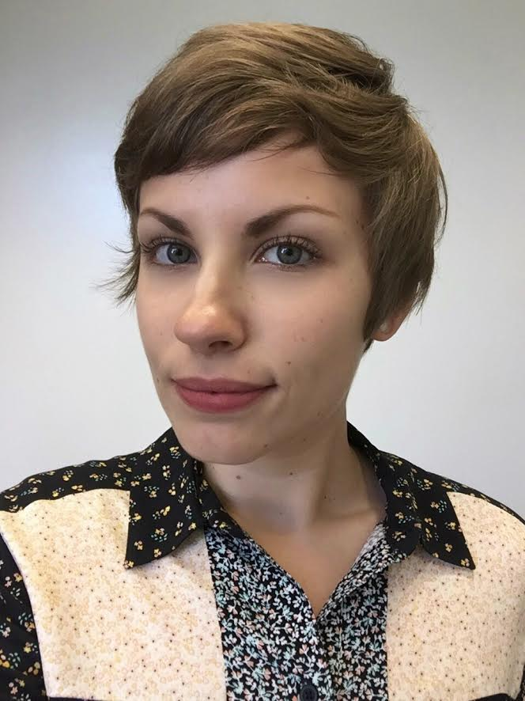

Samantha Streuli
|  | I am an anthropologist who uses a biocultural approach to examine the ways in which social inequality is embodied to produce negative health outcomes for marginalized women. My research is particularly focused around issues of public health, refugee experiences, gender, race, class, psychosocial stress, migration, and trauma. I am also passionate about educational accessibility and solving social problems using innovative, technology-based approaches. I am also experienced in project management, front end web development, database development and management, grant application and administration, and research. |
Research
Gender Role Overload and Cardiometabolic Disease Risk in Somali Refugee Women. PhD Dissertation. This project aims to use a biocultural, intersectional, community-engaged approach to investigate issues of gender role overload, immigration-related stress, and health in Somali refugee women. This project uses a combination of ethnographic methods, focus groups, and epidemiological methods to address the ways in which experiences of multiple forms of marginalization produce negative health outcomes for Somali refugee women.
Genotyping, Phenotyping, and Stereotyping: Rationalizing Race in the Genomic Era. This is an interdisciplinary project involving members of the Communications and Anthropology departments at UC San Diego. The aim of this project is to understand how race is socially constructed, and how these constructions are affected by the introduction of genetic ancestry information. Additionally, this project will explore issues of racial self-identification and the social categorization of race. I am designing a website and survey for this project and will be responsible for web marketing to ensure wide dissemination of the survey. In order to pursue this project, members of our research group have been awarded the UC San Diego Interdisciplinary Collaboratories Fellowship.
The Use of Racial Terminology in Biological Anthropology. This project consists of a systematic analysis of biological anthropology literature from the 1950’s on to determine how racial terminology has been used within the field, and how its use has changed through time. Special emphasis is placed on terminology referring specifically to White and Hispanic/Latino individuals.
Maize, Meat, and Migration: Stable Isotope Analysis at Chalcatzingo, Morelos, Mexico. M.A. Thesis. I performed stable isotopic analyses on human remains from the Formative Period site of Chalcatzingo in Morelos, Mexico. The aim of this project was to determine the diets of these individuals using stable carbon and nitrogen isotopes, and to assess possible dietary disparities high and low status individuals. Additionally, I assessed migration patterns among this population using stable oxygen isotope values.
Web
UCSD Genetics and Race (GEAR) Project
SAMANTHA A. STREULI
E-Mail: sastreuli@gmail.comEDUCATION
PhD Student, Anthropology, Expected 2020. University of California, San Diego.
M.A. Anthropology, June, 2016. University of California San Diego.
B.A. Anthropology, August 2014. The Ohio State University, magna cum laude.
A.S. Liberal Arts and Sciences, May 2012. Sinclair Community College, magna cum laude.
SUMMARY AND RESEARCH INTERESTS
I use a biocultural approach to examine the ways in which social inequality is embodied to produce negative health outcomes for marginalized women. My research is particularly focused around issues of public health, refugee experiences, gender, race, class, psychosocial stress, migration, and trauma. I am also interested in using innovative technological approaches to solving social and health problems, and in better understanding human interaction with technology.
RESEARCH EXPERIENCE
2017 – Present. Streuli, S.A. Gender Role Overload and Cardiometabolic Disease Risk in Somali Refugee Women. PhD Dissertation. This project aims to use a biocultural, intersectional, community-engaged approach to investigate issues of gender role overload, immigration-related stress, and health in Somali refugee women. This project uses a combination of ethnographic methods, focus groups, and epidemiological methods to address the ways in which experiences of multiple forms of marginalization produce negative health outcomes for Somali refugee women.
2016 – Present. Pixley, T., Clausing, E., and Streuli, S.A. Genotyping, Phenotyping, and Stereotyping: Rationalizing Race in the Genomic Era. This is an interdisciplinary project involving members of the Communications and Anthropology departments at UC San Diego. The aim of this project is to understand how race is socially constructed, and how these constructions are affected by the introduction of genetic ancestry information. Additionally, this project will explore issues of racial self-identification and the social categorization of race. I am designing a website and survey for this project and will be responsible for web marketing to ensure wide dissemination of the survey. In order to pursue this project, members of our research group have been awarded the UC San Diego Interdisciplinary Collaboratories Fellowship.
2016 – Present. Clausing E., Streuli, S.A., and Non A. The Use of Racial Terminology in Biological Anthropology. This project consists of a systematic analysis of biological anthropology literature from the 1950’s on to determine how racial terminology has been used within the field, and how its use has changed through time. Special emphasis is placed on terminology referring specifically to White and Hispanic/Latino individuals.
2014 – 2016. Streuli, S.A. Maize, Meat, and Migration: Stable Isotope Analysis at Chalcatzingo, Morelos, Mexico. M.A. Thesis. I performed stable isotopic analyses on human remains from the Formative Period site of Chalcatzingo in Morelos, Mexico. The aim of this project was to determine the diets of these individuals using stable carbon and nitrogen isotopes, and to assess possible dietary disparities high and low status individuals. Additionally, I assessed migration patterns among this population using stable oxygen isotope values.
VOLUNTEER EXPERIENCE
Advisory Board Member. 12/2017-Present. Somali Bantu Organization of America, San Diego, California.
Social Media and Website Coordinator. 02/2017-03/2017. United Women of East Africa, San Diego, California. Responsibilities:
- Improve web design and website content management using HTML, CSS, and PHP in WordPress
- Train organization employees in web development, content management, and social media use
Citizenship Instructor/Donation Assistant. 01/2013 – 12/2013. US Together Inc., Columbus, Ohio. Responsibilities:
- Facilitated discussion and developed training activities for a class of 6-10 refugees from around the world
- Maintained sensitivity to cultural difference, gender issues, and sociopolitical issues affecting individuals
- Provided basic French translation for individuals from Francophone African countries
- Developed a new method of organizing donated goods to facilitate easier location of resources
TEACHING AND MENTORING EXPERIENCE
Graduate Teaching Assistant. 10/2015 – Present. UC San Diego. Courses: Debating Multiculturalism, Human Origins, Evolution of Human Diet, Humans are Cultural Animals, Bioarchaeology, Global Health and Cultural Diversity
Responsibilities:
- Dynamically communicate complex social and scientific concepts in a manner that is easily accessible to laypersons
- Mentor students in the development and improvement of unique research papers
- Facilitate weekly group discussion activities and manage a classroom of 40-60 students
- Create evaluative materials to assess student understanding of course concepts
- Continually incorporate intersectional gender mainstreaming and cultural competence into pedagogical approach
Director and Mentor. 10/2015 – 09/2017. UC San Diego Anthropology Mentor-Protégé Program.
Responsibilities:
- Develop and act as director of a mentorship program for undergraduate anthropology students at UCSD; emphasis on providing resources for international, first generation, and underserved students
- Plan events and workshops to assist undergraduates with the development of professional and academic skills
- Provide individual coaching to undergraduate students including goal setting and identifying growth areas
Science Instructor. 03/2015 – 07/2015 and 06/2016-07/2016. TRIO Outreach Programs. La Jolla, California. Courses: Introduction to Biological Anthropology, Evolution of Human Diet
Responsibilities:
- Researched national education standards to develop an appropriate high school science curriculum
- Designed engaging lectures and laboratory materials to clearly convey complex scientific concepts
- Incorporated race, ethnicity, class, and gender into instructional materials and lectures
- Provided mentoring to groups of underrepresented students
CONFERENCE PRESENTATIONS
STREULI, S.A., SOMERVILLE A.D., AND SCHOENINGER M.J. 2016. Application of Stable Isotope Analysis to Questions of Status and Dietary Disparities at Chalcatzingo, Morelos, Mexico. Submitted Podium Presentation. 85th Annual Meeting of the American Association of Physical Anthropology. Atlanta, GA.
STREULI, S.A., SOMERVILLE A.D., AND SCHOENINGER M.J. 2016. Maize, Meat, and Migration: Stable Isotope Analysis at Chalcatzingo, Morelos, Mexico. Submitted Podium Presentation. 82nd Annual Meeting of the Society for American Archaeology. Orlando, FL.
STREULI, S.A., AHERN J.S., KOLATOROWICZ A., VERCELLOTTI G. 2014. Application of FORDISC to an Historic Italian Population for Sex Determination. Poster presentation. Southwestern Association of Biological Anthropologists 2nd Annual Meeting. Tucson, Arizona.
STREULI, S.A., and HUBBE, M. 2014. Trauma and Pathology in Western European Pleistocene Hominins: Implications for Relative Adaptability. Poster presentation. 83rd Annual Meeting of the American Association of Physical Anthropology. Calgary, Canada.
STREULI, S.A., and HUBBE, M. 2014. Trauma and Pathology in Western European Pleistocene Hominins: Implications for Relative Adaptability. Poster presentation. Ohio State University Denman Undergraduate Research Forum. Columbus, Ohio.
GRANTS AND FELLOWSHIPS
- UC San Diego Interdisciplinary Collaboratories Fellowship 2016-2018
- San Diego Fellowship 2014-2018
- The Ohio State University Undergraduate Research Office Conference Travel Grant 2014
- Critical Difference for Women First Generation Scholarship, 2013-2014; 2014-2015
- Sinclair Community College Honors Program Scholarship, 2011-2012
TECHNICAL SKILLS
- Programming Languages: Python (beginner), HTML (intermediate), CSS (intermediate), PHP (beginner), JavaScript (beginner)
- Software: STATA (intermediate), Donor Perfect (intermediate), MS Office (expert), R (beginner)
- Other: Linux, Mac OS, Windows OS
INSTITUTIONAL SERVICE
- Secretary, UC San Diego Anthropology Graduate Student Association, 2015-2016
- Member, UC San Diego Diversity Advisory Council, 2015-2016
LANGUAGES
- English (native)
- French (intermediate speaking, reading, and writing)
Email: sastreuli@gmail.com